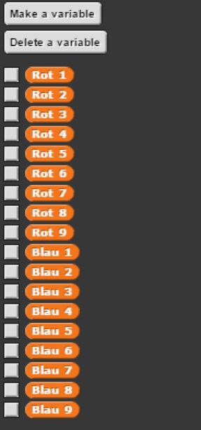
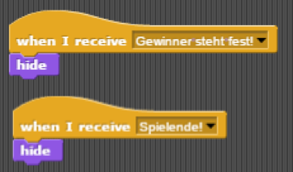
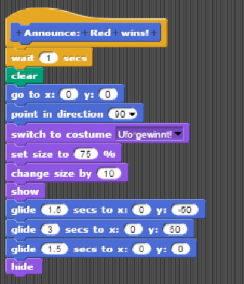

1
2
3
4
1
2
3
4
Bisher kann also ein Tic-Tac-Toe Feld von Sprite1 auf den Hintergrund (Stage) gezeichnet werden und Markierungen des Spielfelds, durch Sprite2 und Sprite3, können vorgenommen werden. Nun soll es darum gehen, wie der Gewinn oder Verlust der Spieler automatisch erkannt werden kann, über einen vierten Sprite, den „Spielleiter“.
Dazu werden insgesamt 18 Variablen eingeführt, die einem Feld und einer Farbe zugeteilt werden, und den booleschen Wert „True“ annehmen, sobald auf genau ihrem Feld eine Markierung von genau ihrer Farbe vorgenommen wird.

Am Anfang des Spiels, noch bevor Sprite2 und Sprite3 für den Spieler zu sehen sind, setzen sie die Variablen ihrer jeweiligen Farbe zurück, auf den booleschen Wert „False“. Sprite2, also das Ufo, setzt die ihm zugehörigen Variablen Rot1 - Rot9 zurück. Sprite3, also der Astronaut, setzt die ihm zugehörigen Variablen Blau1 - Blau9 zurück. Dies geschieht, nachdem sie die Broadcast-Nachricht „Spielfeld vorbereitet!“ von Sprite1, in Gestalt eines Saturns, erhalten haben. Der zugehörige Programmteil ist auf diesen Bildern zu erkennen:
Sobald jedoch eine der Spielfeldzellen in einer der Farben gefärbt wurde, muss die dazugehörige Variable den Wert „True“ annehmen. Erinnerung: Nach der Markierung des Feldes sendet Sprite2 die Broadcast-Nachricht „Feld markieren: Rot“, Sprite3 sendet die Broadcast-Nachricht „Feld markieren: Blau!“ Sie empfangen diese Nachrichten selbst, anstatt sie an den jeweils anderen weiterzugeben. Auf den folgenden Screenshots ist das Programm abgebildet, welches von diesen Broadcasts ausgelöst wird.
Übersetzung: Der Reporter „Which Tile?“ wird in insgesamt neun If-Bedingungen den Nummern der Spielfeldzellen gleichgesetzt. Wenn also, beispielsweise, der Sprite sich aktuell in Zelle1 befindet, da er nach der Markierung eine Sekunde wartet, wird die Variable Rot1 (Sprite2) oder Blau1 (Sprite3) richtig gestellt. Anschließend, wird, über eine Broadcast-Nachricht, dem Spielleiter (Sprite4) mitgeteilt, den Spielstand zu prüfen.
So wird also eine markierte Spielfeldzelle nicht nur auf das Spielfeld aufgezeichnet, sondern auch im Variablenverzeichnis registriert. Das ist von hoher Relevanz für die Bestimmung des Gewinners / Verlierers.
Der Spielleiter (Sprite4) prüft nach jedem Spielzug, den Ufo und Astronaut machen, den aktuellen Spielstand, wie es ihm mit der Broadcast-Nachricht „Spielstand prüfen: Rot / Blau!“ mitgeteilt wurde. Genauer funktioniert dieser Prozess folgendermaßen:
Es gibt insgesamt sieben Kombinationen von Feldern, mit denen man das Spiel gewinnen kann, dazu gehören drei Zeilen, drei Spalten und zwei Diagonalen. Im Skript des Spielleiters ist ein „Prüfprogramm“ für jeden Spieler niedergeschrieben. Diese setzen sich aus mehreren If-Bedingungen zusammen, in denen gecheckt wird, ob die drei Spielfeldvariablen, die es braucht, um das Spiel zu gewinnen, dem booleschen Wert „True“ entsprechen. Wenn das Ufo (Rot) also Spielfeldzellen eins, zwei und drei in seiner Farbe markiert hat und dies im Variablenverzeichnis markiert ist, müssen die Variablen Rot1, Rot2 und Rot3 zwangsläufig der Wahrheit entsprechen. Der Spielleiter registriert und annonciert den Gewinner, nachdem er die Broadcast-Nachricht „Gewinner steht fest!“ abgegeben hat. Die dazugehörigen Skripte sind auf den folgenden Screenshots zu erkennen.
Für die Ankündigung des Gewinners haben wir einen individuellen Block erstellt. Bevor dieser in Kraft tritt, müssen die beiden Spieler (Sprite2 und Sprite3) unsichtbar werden, um das Layout und Design nicht zu stören. Sie erhalten die eben genannte Broadcast-nachricht „Gewinner steht fest!“ und verstecken sich dann, sodass der Tic-Tac-Toe Spieler sie nicht mehr erkennen kann. Das hier abgebildete Programmstück ist in den Skripten beider Sprites vermerkt.
Nun kann der Spielleiter ungestört den Gewinner küren. Dazu nimmt er die Gestalt des Gewinners an, zieht also ein Ufo- oder Astronautenkostüm an, auf denen, in blau, das Textbanner „Gewinner“ steht. Der Sprite befindet sich, in dieser Form, zunächst in der Mitte des Spielfeldes und bewegt sich dann auf und ab, um die freudige Nachricht zusätzlich zu unterstreichen. So sieht das Skript von Sprite2 (Rot) und Sprie3 (Blau) dazu aus:


Übersetzung: Der „Announce: Red wins!“-Block, der unter den Kategorien „Motion“ und „Command“ abgelegt ist, enthält ein Programm zur Ankündigung des Spielgewinners. Dafür befreit der Sprite4 (Spielleiter) zunächst den Hintergrund von Spielfeldgitter und Markierungen („Clear“). Bevor er sich dem Spieler zeigt, begibt er sich zu den Koordinaten x: 0 und y: 0, zeigt in Richtung 90, also nach rechts, und wechselt sein Kostüm. Dabei kann es sich entweder um „Ufo gewinnt!“ oder „Astronaut gewinnt!“ handeln, die Größe des Sprites wird auf 75% + 10% = 85% festgelegt. Nun ist alles vorbereitet und der Sprite kann sich zeigen („Show“). Die Auf- und Abbewegung setzt sich aus drei Teilen zusammen. Zunächst bewegt sich der Sprite, innerhalb von 1.5 Sekunden, nach unten, also zu den Koordinaten x: 0 und y: -50. Anschließend bewegt sich der Sprite, innerhalb von 3 Sekunden, nach oben, also zu den Koordinaten x: 0 und y: 50. Zuletzt bewegt sich der Sprite, innerhalb von 1.5 Sekunden, zurück in die Mitte des Spielfeldes, also zu den Koordinaten x: 0 und y: 0. Nach der Bewegung macht der Sprite sich für den Spieler unsichtbar (“Hide“) und das Spiel kann, durch klicken der grünen Fahne, erneut begonnen werden.